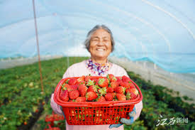
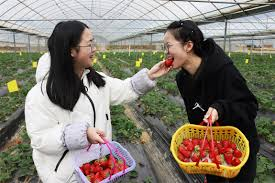
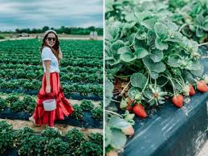
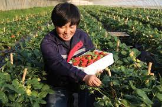
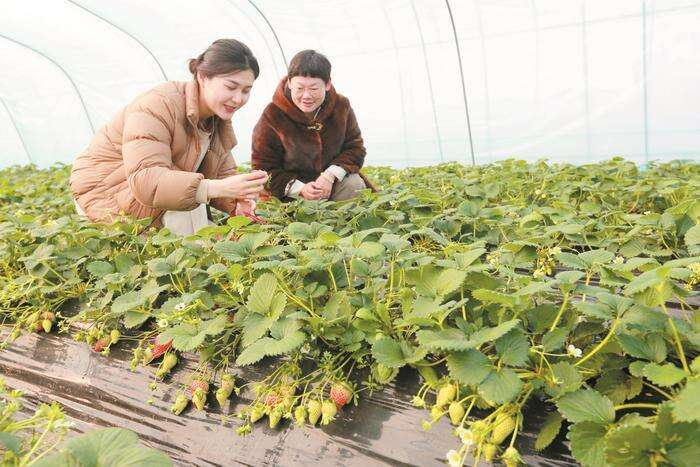
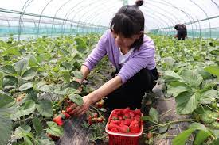

客户案例
-

王奶奶：自然之乐
来到这片草莓农场，我仿佛回到了年轻的时光。玩耍的孩子们充满了生机，而自然的美丽也让我陶醉。草莓园里的采摘活动不仅让我感受到了农村生活的宁静，还勾起了我对小时候农田里奔跑的美好回忆。这个农场不仅是一个丰收的地方，更是一片让人心生宁静的天堂。这次的经历让我对生活充满了感激，我想这将是我人生中美好的一段回忆。总的来说，草莓农场是一个让人留连忘返的好地方。
-

大学生小刘：探索乐趣
来到草莓农场真是一次意外的冒险！在这里，我不仅感受到了大自然的清新空气，还亲手体验了采摘新鲜草莓的乐趣。这种亲近自然的体验让我感到宁静和快乐。农场主人的热情接待和详细解说，让我对农业有了更深刻的了解。而采摘的草莓，新鲜、多汁，成了我这个夏天最美味的回忆。这趟草莓之旅，让我不仅发现了乡村的美丽，也发现了探索自然之乐的新方式。下次一定会约上更多同学，再来一场农场的冒险之旅！
-

张女士：农场美食体验
农场的美食真是出乎我的意料！在这里，我不仅仅品尝到了最新鲜、最甜美的草莓，还有各种创意十足的草莓甜品和冰淇淋。农场的厨师们真的很用心，把草莓发挥到了极致。每一口都让我感受到农场所带来的独特美味。这次的美食之旅让我对草莓有了新的认识，也为我的味蕾带来了一场难忘的盛宴。下次再来，我一定会再次陶醉在这里的美食之中。
-

赵先生：农业新发现
对农业一无所知的我，在草莓农场的农业体验中有了新的发现。农场主人们的耐心讲解让我了解了许多关于草莓种植和农业生产的知识。参与农场的农业教育项目，我仿佛进入了一个生动的课堂，更深刻地理解了农业的辛勤和技术含量。这次的体验让我对农民的辛勤付出有了更多的敬意，也让我对农业产生了浓厚的兴趣。下次我打算再带上朋友，一起来农场探索更多有关农业的奥秘。
-

职场女性王经理：寻找平衡之美
忙碌的职场生活中，偶尔来到草莓农场真是一次寻找平衡之旅。在这片宁静的土地上，我放下了工作的繁琐，体验了采摘新鲜草莓的乐趣。新鲜的草莓不仅丰富了我的味蕾，还让我在这个美好的角落里感受到了大自然的宁静。这次的体验让我更加珍惜平凡的生活，也让我在忙碌中寻找到了一份宁静和愉悦。下次我会推荐给同事们一同前来，一起感受这片平衡之美的乐园。
-

家庭主妇小丽：重拾快乐时光
作为家庭主妇，每天忙碌的生活让我常常忽略了自己。这次来到草莓农场，仿佛找回了曾经快乐的自己。在这片宁静的土地上，我不仅享受了采摘草莓的乐趣，还感受到了大自然的宁静和美好。新鲜的草莓不仅是美味，更是满满的幸福感。这次的农场之旅不仅是对我自己的一次放松，也是对家庭的一次回馈。下次我还会再来，把这份快乐分享给家人。